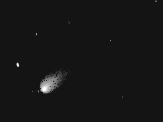

Each year, the National Park Service schedules various California astronomy clubs to conduct public star parties at Glacier Point in Yosemite. This year SJAA got the weekend of July 21-23. Since that weekend presented a bright moon phase, you might be thinking that it was a poor time to be at Glacier Point. You would be wrong. We got the weekend with Comet Linear sweeping through the northern skies! It was big and relatively bright and well placed for viewing in the early evening.
Not everyone avoids the light of the moon, so at least one of our club's LUNA-tics enjoyed spending the night observing the earth's largest satellite. I didn't stay for the whole night, but I must admit that the sight of the Moon rising over Yosemite's dramatic mountain slopes was a great sight.
I began the weekend by leaving the bay area at noon on Friday. I passed through Livermore to pick up a new gadget at Lumicon and then took route 120 to Yosemite. Note: By the time you read this, Lumicon will have moved to a new location. Check the address before going out there.
Route 120 turned out to be the best way to go since route 140 is being rebuilt from the park boundary to the 120 intersection. This is more than the usual patching of the winter damage to the pavement. The road has been torn up and a new road bed is being constructed. This work means that the road is closed each night from 10:30 p.m. to 6:00 a.m.. One of our club's prominent members can tell quite a story about racing the bulldozers to get in before the road closed on Friday night.
|  |
We setup before sundown on Saturday. Surprisingly, we only had about half of the scopes and half the crowds compared to Friday. Setting up early allowed us to move our equipment down to the front of the amphitheatre. The extra effort to carry equipment down the stairs was worth it because it put us further from the trees and cleared more sky to the south and southwest. Both Lew and I had projects we wanted to try at Glacier Point, and the reduced crowd size gave us our chance.
Lew setup his 10-inch LX200. His project was to try and find Pluto. Both of us have tried for Pluto on several occasions and the dark, clear skies of Glacier Point made the difference. He got it!
My own project was to see if CCD imaging could be presented to the public at a star party. I had stopped by Lumicon to pick up a Meade F/3.3 adapter which I used to attach a CCD camera to a 4inch SCT. This CCD scope rode piggyback on a 4inch F/10 Celestron refractor. I found that it is just barely possible to use a CCD for a star party. A shot of Comet Linear was my best image, taken on 23 Jul 2000, 05:30 UTC. This image needed only minor image processing to display to the public. Future improvements to my setup procedures and image processing software should make CCD images a viable tool for public star parties.
The weekend was a great time, with great people, in a great place. We had two clear observing nights with warm weather and a cooperative comet. And best of all, the only big bear that circled my campsite was the one in the night sky.